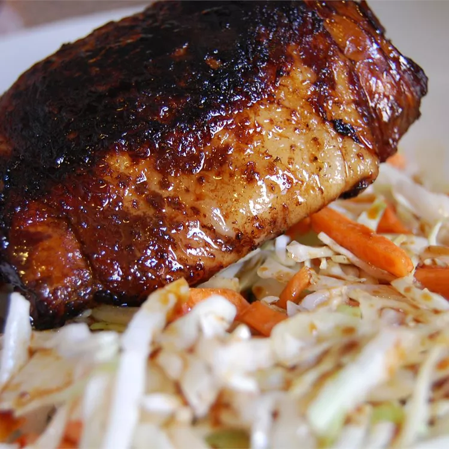

Adobo Recipe

Description
This is one of my favourite recipe as a child backthen. We got to each adibo when there's a occation like birthday's and paydays.
Ingredients
- 1 ½ cups water
- 1 cup distilled white vinegar
- 4 tablespoons soy sauce
- 1 teaspoon whole peppercorns
- 4 cloves garlic, crushed
- 2 tablespoons salt, or to taste
- 1 (2 to 3 pound) whole chicken, cut into pieces2 tablespoons vegetable oil
- 2 tablespoons vegetable oil
Steps
- In a large pot, combine the water, vinegar, soy sauce, peppercorns, garlic and salt. Mix together, add chicken pieces and simmer over low heat (uncovered) until chicken is cooked through and tender (25 to 35 minutes).
- Remove chicken from pot and brown in oil in a large skillet over medium high heat.
- Return chicken, with oil/juices, back to pot with reserved sauce. Cover and simmer over medium heat until sauce reaches desired consistency.
Home